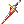

Devoticia's Rune Knight Guide
| This guide has not been updated in a while. | ||
|---|---|---|
| Information on this page may be obsolete and outdated. Please refer to the author for information on future updates. Reason: "Last update in July 2018" |
||
Overview
Rune Knights are the final evolution of the Knight classes. Their name is often abbreviated and referred to as "RK". They have traded in their Pecos for new dragon mounts and are ready to do some serious damage with an arsenal of new powerful attacks while also having the highest HP pool compared to other classes.
Rune Knights have a slower startup leveling-wise, but they can become one of the most versatile and powerful classes in the game. Unfortunately, they suffer from a poor skill tree layout, forcing players to have to get 22 job points to max a basic AOE leveling skill Ignition Break, or going with a Dragon Breath build early on, which may not be very strong in the first 20-30 levels. Rune Knights aspiring to have a Dragon Breath end-game build but do not want to use a skill/stat reset may resort to being mainly a party tank for 20-30 base levels until their HP and SP pools are higher for better damage, as that is how the Dragon Breath skill formula is calculated. The upside is that Bowling Bash is one of the most powerful non-third class AOEs and can be used until level 110-120 or so, but does require a good weapon and some practice with the gutter lines. Dragon Breath ignores reductions in PVP / WoE and is one of the main killing skills, but depends on party buffs such as Magic Strings and Sacrament.
Finally, there are the the runes themselves. Players who choose the Rune Knight class are introduced to a new system of buffs and attacks in the form of rune stones. These consumables provide the user with immensely powerful buffs that range anywhere from a large increase in DEF/MDEF, potting ability, and massive damage increase. Unfortunately, creating runes consumes materials, but their sheer power makes them worth their cost. It is highly recommended that every Rune Knight should get the maximum level of Rune Mastery
Stats
Leveling/Gramps
| Stat | Amount | Notes |
|---|---|---|
| Str | 1-80 | Primary offensive stat. Increases ATK, weight limit, and DEF. |
| Agi | 60-100 | Primary defensive stat. Increases Flee and ASPD. |
| Vit | 90-120 | Kind of important (especially for Tank build), but not in all cases. Increases DEF, HP, HP regen, and grants immunity to stun (when Base and Bonus VIT adds to 100) |
| Int | 1-80 | Increases SP, SP regen, MATK, and MDEF |
| Dex | 50-70 | Increases HIT, and a little bit of ASPD and ATK. Important for hitting things and building up your ASPD. |
| Luk | 1-60 | All-around stat. A must-have for Crit Builds. Increases Critical Rate, Perfect Dodge, and a little bit of HIT and ATK. |
Critical Aspd+Frenzy Build
| Stat | Amount | Notes |
|---|---|---|
| Str | 90-100 | Base damage and maximum weight amount. |
| Agi | 90-120 | Depending on gear and how much you're willing to spend on speed boosts. |
| Vit | 85-90 | 100 total recommended for stun immunity. |
| Int | 1-80 | For more damage with autocasting gear and some mDef |
| Dex | 1 | Doesn't need to be too high because crits don't miss. |
| Luk | 120 | 120 LUK to gain the full benefits of Temporal Luck Boots and Critical Rate. |
Skills
Here is the general guide of what to get on your skill tree. Despite having an arsenal of skills, Rune Knights are actually pretty straightforward and rely only on some skills. This skill table is aimed to help newbies getting the essential skills needed on Rune Knight.
| Skill | Skill Type | Info | Recommended Level |
|---|---|---|---|
 Sword Mastery Sword Mastery
|
Simply boosts your damage when wielding a One-Handed Sword. Not many builds use a One-Handed Sword and this skill is merely taken as a pre-requisite for other skills. | ||
 Two-Handed Sword Mastery Two-Handed Sword Mastery
|
All three builds which are going to be covered in this guide can use Two-Handed Swords, though this skill is maxed mostly because it is a pre-requisite for  Parrying. Parrying.
|
||
 Increase HP Recovery Increase HP Recovery
|
Never a bad choice to max this one out since each level of this skill increases the effectiveness of potions on top of boosting normal HP regeneration. | ||
 Bash Bash
|
Mainly maxed to help you out during the leveling stage as a Swordsman since it deals a good amount of damage. |
||
 Provoke Provoke
|
Only useful when you act as a lurer in your party and when you are mobbing passive mobs. The overall usage of this skill is limited to those situations considering boss-flagged or Undead mobs are immune to this skill and casting it on every single mob takes too much effort for a miniscule damage improvement. Also, a pre-requisite for  Endure. Endure.
|
||
 Magnum Break Magnum Break
|
Another skill that can help you out during Swordsman phase, it deals AoE damage and knocks your enemy back to give you some breathing space. Aside from that, using it boosts your damage with Fire property for the next 10 seconds, which makes it an overall solid skill to take. | ||
| Endure
|
Makes your character skip flinching animation which is quite bothersome when luring mobs. It does not scale well with levels and mostly taken as a pre-requisite for  Riding (and also as leftover). Riding (and also as leftover).
|
||
| Knight Skill Tree | |||
 Spear Mastery Spear Mastery
|
A Spear weapon mastery damage boost which is further improved if the character is on mount. Unless you are using a spear as your main weapon, this skill is pretty redundant as a Knight class and usually is just taken as a pre-requisite for  Spiral Pierce, which is a Lord Knight skill. Spiral Pierce, which is a Lord Knight skill.
|
||
 Pierce Pierce
|
A Spear exclusive skill that deals mediocre damage. Only better than Bash when fighting Large mobs due to the nature of this skill. Redundant on Knight skill tree and is only taken as a pre-requisite for Spiral Pierce.
|
||
 Brandish Spear Brandish Spear
|
Deals less damage than  Bowling Bash, though it has higher AoE compared to it. Either take this or Bowling Bash on your Knight skill tree. Bowling Bash, though it has higher AoE compared to it. Either take this or Bowling Bash on your Knight skill tree.
|
||
 Spear Stab Spear Stab
|
A 1x5 splash damage skill which is also Spear exclusive. Unless you are using Spear, you are less likely to use this skill compared to other skills. Though it is a pre-requisite for Spiral Pierce.
|
||
 Spear Boomerang Spear Boomerang
|
Another Spear exclusive skill which boasts its huge range (13 cells at max level!). An okay skill to use if you want to keep your distance between your target but overall not a really preferred skill to level up. | ||
 Two-Hand Quicken Two-Hand Quicken
|
Increases character's attack speed when using Two-Handed Sword weapons. Great self-buff skill and never a bad idea considering the builds which are going to be covered can all use it. Effect can be cancelled with  Quagmire or Quagmire or  Decrease Agility. Decrease Agility.
|
||
 Auto Counter Auto Counter
|
A fairly simple skill that allows you to counter the attacker if they attack you within the cast time, dealing guaranteed critical damage. It has almost no use on the PvM scenario aside for being a pre-requisite for Bowling Bash.
|
||
| Bowling Bash
|
Basically an upgraded Bash with AoE and knockback effects added to it. Deals huge damage even for a 2nd class skill. It is really recommended to level up with this skill as it is too good to be passed on. Latest update also introduces /bbe command to help newer players understand gutter lines (basically area where you SHOULD NOT use Bowling Bash).
|
||
| Riding
|
Simply allow you to ride Pecos for faster movement and more weight limit, though reducing your attack speed. If you are wearing a Spear class weapon, it allows them to nullify size mod from the weapon. | ||
 Cavalry Mastery Cavalry Mastery
|
Regain the lost attack speed due to Riding penalty. Higher level decreases the penalty further (maxed gives you normal attack speed).
|
||
| Lord Knight Skill Tree | |||
 Aura Blade Aura Blade
|
Gives bonus flat damage at the end of your damage depending on level. The bonus damage ignores enemies' DEF and Flee. | ||
| Parrying
|
Two-Handed Sword exclusive skill that allow you to block physical attacks. Very good for its defensive purpose. | ||
 Concentration Concentration
|
Gives damage and HIT boost in exchange of your DEF. Applies Endure effects upon cast. If Endure is active, this skill refreshes it.
|
||
 Tension Relax Tension Relax
|
Forces your character into sit position to amplify HP recovery. Sitting without using this skill does not amplify the regeneration. Skill cancels immediately if your character is not sitting (taking damage or standing) or changing equip. | ||
 Berserk Berserk
|
Boosts your character's damage output and HP while disabling chat, skill usage, item usage, and prevents healing. It also drains a slight amount of HP every interval within the duration and drains SP to 0 upon activating it. Effect can be ended prematurely if a party member uses  Dispell or Dispell or  Clearance on you, HP reaches 100, dies, or logging out. Can only be learned at job level 50. Only useful for Critical RK build. Clearance on you, HP reaches 100, dies, or logging out. Can only be learned at job level 50. Only useful for Critical RK build.
|
||
| Spiral Pierce
|
Primary damaging skill on one of the builds which is going to be covered. It deals higher damage the heavier your weapon is. Spear and Sword exclusive skill. | ||
 Head Crush Head Crush
|
Single target offensive skill that deals moderate damage and has a chance to inflict Bleeding. Not even remotely useful in PvM scenarios. | ||
| Joint Beat | A Spear exclusive single targeted offensive skill that deals low damage, but has a chance of inflicting various unique status debuffs. Similar to Head Crush, it finds a hard way to fit into any build in PvM.
|
||
| Rune Knight Skill Tree | |||
 Enchant Blade Enchant Blade
|
Adds bonus damage to your auto attacks which is also further boosted by your MATK. A pre-requisite for  Ignition Break. Ignition Break.
|
||
 Sonic Wave Sonic Wave
|
A pretty good single-target long range skill that has moderate cooldown. Fairly good to use when dealing damage between Ignition Break cooldown.
|
||
 Death Bound Death Bound
|
An upgraded Auto Counter. Amplifies taken damage and return it to the attacker. The drawback is, you also takes some of the amplified damage yourself. Also a pre-requisite for Ignition Break
|
||
 Hundred Spear Hundred Spear
|
A Spear exclusive skill that works the opposite way of Spiral Pierce (higher damage the lighter your spear is). Higher level of Spiral Pierce further boosts the damage of this skill. It also has a chance of casting Spear Boomerang on the target alongside with this skill (only if learned).
|
||
 Wind Cutter Wind Cutter
|
An AoE-targeted skill that deals damage to its surrounding with a low chance of causing Fear to affected enemies. Hardly usable due its low damage and mostly serve as a pre-requisite for Ignition Break.
|
||
| Ignition Break
|
An AoE damaging skill that deals higher damage the closer the enemies are. If your weapon element is Fire, further amplifies the damage. | ||
 Dragon Training Dragon Training
|
Allows you to mount dragons. Similar to Cavalry Mastery, higher skill level recovers more lost attack speed whilst riding a dragon with an addition of increasing weight limit. Higher skill levels also boost  Dragon Breath and Dragon Breath and  Dragon Breath Water damage. Dragon Breath Water damage.
|
||
| Dragon Breath
|
One of Rune Knight primary skills. While riding a dragon, deals Fire property damage and has a chance to inflict Burning to damaged enemies in the targeted area. It has its own formula that consist of current HP, max. SP, and ranged modifier. | ||
 Dragon Howling Dragon Howling
|
Causes Fear to enemies within radius of the skill upon activation which can be helpful to stop enemies on their tracks | ||
 Rune Mastery Rune Mastery
|
Enables rune crafting, each rune has its own unique capability that can help Rune Knights. The list of runes and their effects can be seen here | ||
 Phantom Thrust Phantom Thrust
|
A Spear exclusive skill that pulls your target while damaging it. Can be used to party members without the damage part. | ||
| Dragon Breath Water
|
Water version of Dragon Breath that has a chance to inflict Freezing to damaged enemies.
|
||
Equipments
Leveling/Gramps
This is a fairly cheap, easy to get set of gear ideal for people starting out. Some of it can be obtained before 125, and you should try to have all of it by 130 to make your leveling life much easier.
| Item | Slot | Way to obtain | Notes |
|---|---|---|---|
 Rideword Hat [1] Rideword Hat [1]
|
Upper | Quest | This isn't 'cheap', but it's a great leveling hat for nearly every class and worth having one in your bank to pass around between chars. Procs HP and SP leech. |
 Thanatos Hammer [1] Thanatos Hammer [1]
|
Weapon | Ghost Palace | 180 ATK +6 INT +6 VIT -6 LUK. Creates a low chance of regaining HP and SP from 5% of your damage dealt while you are Physically attacking. Consumes 100 HP every 10 seconds. Consumes 1,000 HP when unequipped. Easy to get from Ghost Palace at level 120, an excellent leveling weapon that can proc HP and SP leech. Throw a Hunter Fly Card in it for even more sustainability. |
 Platinum Shield [0] Platinum Shield [0]
|
Shield | Sword Guardian | Reduces damage from Medium and Large size monsters by 15% and from Undead by 10%. A fairly cheap shield that essentially has a built in Hodremlin Card. |
 Armour of Airship [0] Armour of Airship [0]
|
Armour | Airship Assault | +1 All Stats, +1000 HP, +100 SP. Full set bonus gives another 25% HP/SP. Drops in Airship Assault instance, any monster can drop it so you don't even need to defeat the MVP. |
 Manteau of Airship [1] Manteau of Airship [1]
|
Garment | Airship Assault | +20 FLEE, +10% Neutral resistance and even a card slot. An excellent garment on its own. Also drops in Airship Assault. |
 Boots of Airship [0] Boots of Airship [0]
|
Boots | Airship Assault | +1 AGI and +10% ASPD, not very good on its own but the full set bonus is amazing and worth it. And as you may have guessed, also drops in Airship Assault. |
 Silverwork Bracelet [1] Silverwork Bracelet [1]
|
Accessory | Old Glast Heim Treasure Room | +1 All Stats, +3 MDEF, and a slot. Simple, cheap and effective until you get something better. |
 Black Rosary [1] Black Rosary [1]
|
Accessory | Wraith Dead | At +15 MDEF, a high magic resistance option. |
Critical Aspd+Frenzy Build
Uppers
| Item | Type | Way to obtain | Notes |
|---|---|---|---|
| Rideword Hat [1]
|
Upper | Quest | HP/SP leech, useful for farming |
 Fox Ears Bell Ribbon [1] Fox Ears Bell Ribbon [1]
|
Upper | Cash Shop | Good for ASPD bonus. |
| Snake Head [1] | Upper | Cash Shop | Best possible headgear for Crit/Berserk RuneKnight. |
Middles
| Item | Type | Way to obtain | Notes |
|---|---|---|---|
 Sigruns Wings [0] Sigruns Wings [0]
|
Middle | Cash Shop | Can be shared with other classes |
 Black Frame Glasses [1] Black Frame Glasses [1]
|
Middle | Cash Shop | Can be shared with other classes (and fashionable). |
 Cyclops Glasses [1] Cyclops Glasses [1]
|
Middle | Owl Viscount and Owl Marquis in Nightmare Clock Tower Floor 3 | Cheapest slotted middle headgear |
Lowers
| Item | Type | Way to obtain | Notes |
|---|---|---|---|
 Gangster Scarf [0] Gangster Scarf [0]
|
Lower | Quest | Cheap and easy to acquire |
 Spare Card [0] Spare Card [0]
|
Lower | Cash Shop | Useful when you have to farm a lot of materials and loots. Blank Card can be exchanged into goodies in 2nd floor Main Office |
| CD In Mouth [0] | Lower | Cash Shop | Add extra DPS for Autocast |
Armors
| Item | Type | Way to obtain | Notes |
|---|---|---|---|
 Hero Plate [1] Hero Plate [1]
|
Armor | Bios Island Morse's Cave |
120 DEF, +5% MaxHP/SP, +10 ATK and MATK, Banishing Point damage +10%. |
 Abusive Robe [1] Abusive Robe [1]
|
Armor | Honour Tokens | Ignore +4% DEF of Demi-Human, Demon and Undead with each refine. Enchant requires your armour to be refined to +7. |
Garments
| Item | Type | Way to obtain | Notes |
|---|---|---|---|
 Heroic Backpack [1] Heroic Backpack [1]
|
Garment | Gold Coins Proof of Loyalty Valor Badges Monster Coupons |
20 DEF; enables use of Greed Lv1.
Grants additional bonuses when it is refined to +7 or +9, depending on your stats. Notable bonuses for Royal Guards include:
A great choice for offensive builds due to the STR, AGI, and DEX bonuses, while also giving some defensive function with enough base VIT. Only use this if it's refined to +7 or above. |
Shoes
| Item | Type | Way to obtain | Notes |
|---|---|---|---|
 Temporal LUK Boots [1] Temporal LUK Boots [1]
|
Shoes | Materials from Old Glast Heim Instance | Go-to shoes for any Crit build. Enchant with LUK (Critical lv3) or AGI (ASPD lv. 3) for initial enchant, and Hawkeye, Speed of Light or Lucky Day for the second enchant. |
Accessories
| Item | Type | Way to obtain | Notes |
|---|---|---|---|
 Physical Enhancer Ring [1] Physical Enhancer Ring [1]
|
Accessory | Geffen Magic Tournament | ATK +5%. Can be enchanted with up to 2 extra properties.
Currently the best accessory for damage-dealing, given you have it enchanted with the right properties. The best possible enchant for an offensive RK would be double ATK +3% for a total of ATK +11% counting the base item effect. |
 Pendant of Maelstrom [1] Pendant of Maelstrom [1]
|
Accessory | Nightmarish Jitterbug | All Stats +1, ATK/MATK +6%. When receiving magical damage, low chance of autocasting Maelstrom Lv1.
An excellent accessory for damage-dealing due to its high ATK bonus. |
 Bakonawa Agimat Tattoo Bakonawa Agimat Tattoo
|
Accessory | Bakonawa Lake Pintados Festival |
ATK +7%, ASPD +10%
This accessory has a good balance between ASPD and ATK bonus, making it a good option. The main downside is that it lacks a slot. |
 Sarah's Left Earring Sarah's Left Earring
|
Accessory | Sarah and Fenrir | Enables use of Heal Lv1 (Left) or Teleport Lv1 (Right). Can be enchanted using materials from Sarah and Fenrir
These accessories mainly shine through their possible enchantments. |
 Bison Horn [1] Bison Horn [1]
|
Accessory | Monster Drop | AGI +2. If worn with Thorny Buckler, ASPD +10% and Reflects 5% damage back to the enemy.
This accessory is mainly used for maximising ASPD. |
 Buffalo Horn [1] Buffalo Horn [1]
|
Accessory | Custom Headgear Quest | ASPD +1. If worn with Buffalo Horn, additional ASPD +1.
This accessory is mainly used for maximising ASPD. |
 LUK Glove [1] LUK Glove [1]
|
Accessory | Splendide | Easy to obtain |

Weapons
| Item | Slot | Type | Location | Notes |
|---|---|---|---|---|
| Thanatos Great Sword [1] | Weapon | Leeching | Ghost Palace | 280 ATK +6 INT +6 VIT -6 LUK. Creates a low chance of regaining HP and SP from 5% of your damage dealt while you are Physically attacking. Consumes 100 HP every 10 seconds. Consumes 1,000 HP when unequipped. Chance to Leech HP/SP off your attacks. Easily obtained from Ghost Palace. Keep one around with a Hunter Fly Card in-case of emergency. |
|  Crimson Twohand Sword [2] | Weapon | Offensive | Multiple Drops | 170 ATK, ATK + (Upgrade Level * Upgrade Level) up to a maximum Upgrade Level of 15. If the user's base level is 70 or higher, for every 10 base levels, ATK + 5. Crimson weapons get stronger with refine, making this a beast at +15 refine.
The element of the weapon should correspond to whatever you are killing. In general Holy weapons are highly demanded for most end game instances which are often against Demons and Undead. Neutral element is a good starting element as it's useful against everything but Ghosts. Shadow is generally lack-luster with most end game enemies being strong to it. But remember, using an elemental converter you can make any weapon Fire/Water/Earth/Wind as needed. |
 Lindy Hop [2] Lindy Hop [2]
|
Weapon | Offensive | Sky Fortress | 340 ATK, +1% ATK and +1% ASPD per 2 refines.Indestructable status makes this sword best for Crit Build. |
Cards
| Item | Type | Way to obtain | Notes |
|---|---|---|---|
 Dark Pinguicula Card Dark Pinguicula Card
|
Hat | Dark Pinguicula in Splendide Field 01 and Nidhogg's Dungeon | Easy to obtain |
 Duneyrr Card Duneyrr Card
|
Hat | Duneyrr in Nidhogg's Dungeon | Hard to obtain but looks fancy |
 Porcellio Card Porcellio Card
|
Armor | Porcellio in Einbroch Field 09 | Great all-around and easy to obtain Armor Card |
 Ancient Mimic Card Ancient Mimic Card
|
Armor | Ancient Mimic in Thanatos Tower 2nd Floor | Good Card if you need more AGI |
 Bathory Card Bathory Card
|
Armor | Bathory in Clock Tower Basement 4th Floor | Useful for Old Glast Heim Instance |
 Marc Card Marc Card
|
Armor | Marc in Byalan Dungeon 4th Floor | Useful against enemies that use Freeze |
 Swordfish Card Swordfish Card
|
Armor | Swordfish in Byalan Dungeon 4th Floor | Useful against enemies that spam Water Balls |
 Abysmal Knight Card Abysmal Knight Card
|
Weapon | Abysmal Knight in Geffenia and Glast Heim Chivalry | Good against boss-protocol monsters |
 White Knight Card White Knight Card
|
Weapon | Old Glast Heim Instance | Quite a bit expensive but best all-around Weapon Card |
 Hunter Fly Card Hunter Fly Card
|
Weapon | Hunter Fly in Geffen Dungeon 1st Floor | Use with Thanatos Great Sword [1] to regain HP and SP |
 Petal Card Petal Card
|
Garment | Petal in Eclage Field 01 | For maximum critical damage |
 Verit Card Verit Card
|
Shoes | Verit in Pyramid Basement 1st Floor | Easy to obtain Card if you need both Health and SP |
 Green Ferus Card Green Ferus Card
|
Shoes | Green Ferus in Abyss Lake 1st Floor | Easy to obtain Card if you need more HP |
 Matyr Card Matyr Card
|
Shoes | Matyr in Sphinx 2nd Floor and Pyramid 4th Floor | For more HP and ASPD |
 Firelock Soldier Card Firelock Soldier Card
|
Shoes | Firelock Soldier in Amatsu Dungeon 1st Floor | Great Card if you have access to +9 Shoes |
 Outrageous Cookie Card Outrageous Cookie Card
|
Shoes | Tyrannical Cookie in Horror Toy Factory Instance | Quite expensive Card but great for maximizing damage output |
 Creamy Card Creamy Card
|
Accessory | Creamy in Geffen Field 05 | Useful Card for farming purpose |
 Gold Scaraba Card Gold Scaraba Card
|
Accessory | All types of Gold Scaraba in Nightmare Scaraba Hole | Hard to obtain Card but great for damage |
 Essence of Evil STR 3 Essence of Evil STR 3
|
Other | Temple of Demon God Instance | Recommend for Hat or Shoes to maximize damage |
 Essence of Evil AGI 3 Essence of Evil AGI 3
|
Other | Temple of Demon God Instance | In case you need more AGI to reach 193 ASPD |
| Essence of Evil LUK 3 | Other | Temple of Demon God Instance | In case you need more Critical Rate |
Pets
| Item | Type | Notes |
|---|---|---|
 High Orc High Orc
|
Offensive | +25 ATK, it's hard to beat that. |
 Little Isis Little Isis
|
Offensive | +4% ATK, you need about 600 ATK for this to be better than High Orc. |
 Succubus Succubus
|
Leeching | +1% HP and HP Leeching, excellent choice if you want to stay at full HP. |
 Incubus Incubus
|
Leeching | +5% SP and SP Leeching, the choice if you don't want to worry about SP. |
 Loli Ruri Loli Ruri
|
Balanced | +3% HP, even more HP and a chance to proc Heal on yourself when hit. |
 Whisper Whisper
|
Defensive | +7 FLEE if you need that little bit of extra dodge, and lets you use Hide. |
A full list of base pets can be found here, while evolved pets and NovaRO exclusives can be found here. If a pet appears on both pages, the NovaRO page information should be used in the event of discrepancies.
Example
Critical-Berserk Build
- Upper head - Snake Head+Essesnce of Agi 3(Snake Head provides Double Attack Lv.5 which can be critical hits)
- Middle head- Singrum Wings or Any slotted Mid-headgear with Essence of Evil AGI 3
- Lower head - Gangster Scar or Pirate Dagger
- Armor - +7 Abusive Robe with Ancient Mimic Card(can be enchanted for extra Agi/Luk/Str)
- Garment - +7/9 Heroic Backpack with Petal Card
- Boots - Temporal Boots of Luck with Essence of Evil Agi 3(can be enchanted with Critical damage +10%,as second enchant Lucky Day,Speed of Light,Bear Might)
- Accesories - 2x Physical Enchancer with Golden Scaraba Cards(can be enchanted with Critical damage and ASPD)
- Weapon +7 or higher Lindy Hop with 1x Abysmal Knight Card+1x White Knight Card(can be enchanted with Atk,Aspd,Crit Damage)
Gameplay
Runes
Runes are the signature consumable items of the Rune Knight class. They are only received by crafting and cannot be traded, dropped, or sold to NPC. However, they can be placed into storage and guild storage. You can hold up to 60 copies of each type of rune. The exceptions are Turisus, Pertz and Asir, which have no limit.
Creation
- BaseSucessRate = (51 + 2 Rune Mastery Skill Lv)%
- StatBonus = [(LUK + Job Lv) 10 + DEX 30]%
- OreBonus
- RunestonePenalty
Success chance = BaseSuccessRate + StatBonus + OreBonus - RunestonePenalty
Quantity created:
- Level 1-5 Rune Mastery = 1
- Level 6-9 Rune Mastery = 1 or 2
- Level 10 Rune Mastery = 1, 2 or 3
If you create more copies of a rune than you can hold, you'll instead create enough to hit maximum limit. For example, if you have 59 Lux Anima Runes and you successfully create 3, you'll instead only gain 1 rune to hit the maximum of 60.
The lowest two grades of runestone ores can be bought from the Rune Merchant (@navi prontera 168 229). The prices are non-discountable and he allows buying 2000 at one time.
| Runestone | Level | Penalty | Ingredients | ||||
|---|---|---|---|---|---|---|---|
 Turisus Runestone Turisus Runestone
|
1 | -5% |  1 Elder Branch 1 Elder Branch
|
 1 Blue Hair 1 Blue Hair
|
 1 Claw of Desert Wolf 1 Claw of Desert Wolf
| ||
| Isia Runestone | 2 | -10% |  1 Burning Heart 1 Burning Heart
| ||||
| Pertz Runestone | 3 | -10% | 1 Light Granule |  1 Tangled Chains 1 Tangled Chains
|
 1 Dragon Canine 1 Dragon Canine
| ||
 Hagalas Runestone Hagalas Runestone
|
4 | -5% |  1 Round Shell 1 Round Shell
|
 1 Dragon Skin 1 Dragon Skin
| |||
 Asir Runestone Asir Runestone
|
5 | -5% | 1 Light Granule |  1 Ogre Tooth 1 Ogre Tooth
| |||
 Urj Runestone Urj Runestone
|
6 | -15% |  1 Horrendous Hair 1 Horrendous Hair
|
 1 Honey 1 Honey
| |||
 Rhydo Runestone Rhydo Runestone
|
7 | -5% | 1 Light Granule |  1 Red Gemstone 1 Red Gemstone
| |||
 Nosiege Runestone Nosiege Runestone
|
8 | -15% | 1 Light Granule | 1 Destroyed Armor | 1 Worn-out Magic Scroll | ||
 Verkana Runestone Verkana Runestone
|
9 | -20% |  1 Armor Piece of Dullahan 1 Armor Piece of Dullahan
| ||||
 Lux Anima Rune Lux Anima Rune
|
10 | -15% | 3 Light Granule |  3 Gold 3 Gold
| |||
Effects
| Runestone | Skill | Type | Properties | Description |
|---|---|---|---|---|
| Turisus Runestone
|
Giant Growth | Support |
|
For 3 minutes, gain the following effects:
|
| Isia Runestone | Vitality Activation | Support |
|
For 3 minutes, gain the following effects:
|
| Pertz Runestone | Storm Blast | Area Damage |
|
Deal damage to all enemies in a 7x7 area around you and additionally knock them back 7 cells. The damage formula is:
1 second item reuse delay. |
| Hagalas Runestone
|
Stone Hard Skin | Support |
|
Consume 20% of your current HP. For 3 minutes or when you have received damage greater than the amount of HP paid, gain the following effects:
|
| Asir Runestone
|
Fighting Spirit | Support |
|
For 3 minutes, gain the following effects:
All party members on-screen will gain half of the ATK bonus. |
| Urj Runestone
|
Abundance | Support |
|
For 3 minutes, restore 60 SP every 10 seconds. |
| Rhydo Runestone
|
Crush Strike | Support |
|
Your next physical melee attack will deal:
Once you attack, there is a 20% chance of your weapon breaking. This effect runs out if not used in 30 seconds, or you change equipment. 30 second item reuse delay. |
| Nosiege Runestone
|
Refresh | Support |
|
Recover 25% of your MaxHP and restore and prevent the following status ailments for the next 60 seconds:
2 minute item reuse delay. |
| Verkana Runestone
|
Millenium Shield | Support |
|
Create shields that absorb any type of damage and lasts for 3 minutes. There is a 20% chance 4 shields are created, 30% chance that 3 shields are created and a 50% chance that 2 shields are created. Each shield has 1000 HP and excess damage does not carry over.
60 second item reuse delay. |
| Lux Anima Rune
|
Lux Anima | Support |
|
Transfer your most recently cast rune buff to all party members within a 7x7 area around you. You can use this skill repeatedly to transfer more buffs, starting from the most recently cast. The duration of the copied buff is 60 seconds. Eligible buffs include: Millennium Shield, Refresh, Giant Growth, Stone Hard Skin, Vitality Activation, Abundance. |


Which to use:
- For Crit Build use Asir+Turisus as maximum damage per second.
- For Tank/Lure Hagalas+Nosiege,Isia Rune Stones
Leveling
For this section, I will assume that the average new player would start out alone, only joining parties and guilds a while after starting out. Therefore, this Leveling guide is based on the Damage-Oriented Tank Build, which works better for Solo-play compared to the Hybrid Tank Build and later changed to main DPS/Crit Build.
Novice
The Novice Stage is quick and easy to go through. Just by registering to Criatura Academy, you should be at Job level 10 already. Doing the Shop Helper Quest is also useful to get Novice Fly Wings to use as you go along.
First Job
As a Swordsman, you will have access to two noteworthy offensive skills: Magnum Break and Bash. These two skills will make leveling as a Swordsman relatively easy, compared to other classes.
The Cotton Shirt and Novice Spear is adequate for getting you up to Second Job, but it is also a good idea to get Eden Group Equipments.
Level 11 - 26
If you haven't reached level 11 yet as a Swordsman, go south of Prontera and kill some Porings to earn a few levels. Raise some DEX and STR and don't bother with the rest of the stats for now.
Register at the Eden Group and take the Spore Hunting quest. Pick up a couple of Concentration potions from the Tool Dealer, then start killing Spore at the field east of Payon town with regular attacks until you finish the quest. Make sure you have the @autoloot Player Command active at 100% so you can earn random loot to sell to NPCs, and there's also a chance you'll get a Spore Card, which might be useful later on. You can then submit the quest back in Eden Group HQ.
Aim to get Bash Lv10 and Magnum Break Lv10 as soon as possible, all while keeping on raising DEX and STR.
Level 27 - 40
Talk to Instructor Boya to get her equipment quest. Go to Payon Dungeon(or Ant Hell if you're level 33 already) and do what the quests tell you. Having Bash and/or Magnum Break should help a lot here. Claim the equipment rewards back in Eden Group HQ after you finish the quest (Either the Sabre or the Slayer is good), then continue leveling until you reach Base level 40. Make sure you have 40~50 DEX at this point, with decent STR and some points in VIT and AGI. Ignore INT and LUK as they are useless at this point.
Level 40 - Job change
Go to Orc Dungeon floor 1 and use Magnum Break to kill the mobs there. You will have an elemental advantage against these monsters, since they are Undead element, which means they take more damage from Magnum Break's Fire Property attack, making it an easy place to level. It's a good idea to stock on Fresh Fish (purchasable from the Comodo Chef Assistant) if you run out of Novice/Intermediate Potions from your Beginner box.
When you reach Base Level 51, you may choose to get Instructor Boya's next quest, which is also located in Orc Dungeon.
As a pre-trans class, you may choose to Jobchange at Job level 40 without any disadvantage. However, make sure you have Magnum Break Lv10 and Endure Lv10 when you Job change.
Second Job
It's relatively easy to level as a Knight to having access to Bowling Bash, which does 500% damage with a Two-handed Sword type Weapon. You also have Magnum Break, which is still a reliable AoE to use at these higher levels.
Job change - Level 70
Continue leveling in Orc Dungeon with Magnum Break until you reach Base Level 70. Try to get Bowl.Bash Lv10 and Cavalry Mastery Lv5 as soon as possible, and make sure you have 60~70 DEX at this point. Keep adding more STR for better damage while putting some points in VIT for higher MaxHP and AGI for faster ASPD.
If you have been collecting and selling your loot, you should have enough money to buy a Sword from the Prontera Weapon Dealer, which can double your Holy Cross damage due to its weapon type.
Level 71 - 90
Talk to Instructor Ur to get his equipments quest, and talk to the 71-85 board to get the Evil Druid and Wraith hunting quests. Grab a few Awakening Potions from the tool dealer and a Sword from the Prontera Weapon Dealer, then go to Glast Heim St.Abbey and finish the quests. You should be able to one-shot the mobs with Bowl.Bash, due to Having 2Hander Sword Quicken also helps you dish out damage quicker.
It is advisable for you to get Eden Group Sword I for the reward, as it is a good weapon to use as a Rune Knight at level 99-120.
After you've finished Instructor Ur's quest, there are several areas you can choose to go to. You can continue hunting Evil Druids and Wraiths(which should be a piece of cake) while using the Board Quests for more EXP, or you can earn some Zeny by farming for Crimson Weapons.
Ground Petites located east of Glast Heim Entrance would be the easiest choice, as they are Earth 1 element, therefore take 50% more damage from Magnum Break's Fire property attack. The Crimson Mace that they drop is useful for Geneticists and Suras, and is therefore a popular and valuable item to sell in the market.
Another option is Jaguars and Headless Mules in the field outside of Brasilis town, the map of which is littered with various other mobs as well. Jaguars are Earth 2 element, and therefore take 75% more damage from Magnum Break. However, the Headless Mules themselves are actually Fire 3 element, which means they are immune to Magnum Break, and thus should be killed using Bowl.Bash. Jaguars drop Crimson Knuckles, which may be useful for Suras; while Headless Mules drop Crimson Katars, which are valuable for Guillotine Crosses.
Lastly, Stem Worms in the field 1 map north and 1 map east of Lighthalzen drops Crimson Spears, which are useful for you as an RG. These monsters are Wind 1 element, which means they don't receive more damage from either Magnum Break and Bowl.Bash. Use both skill in combination depending on the circumstances. Additionally, this map also contains Metalings, which drop Crimson Revolvers, valued by Gunslingers and Rebels.
Level 91 - 99
Go to the 2nd floor of Eden Group Headquarters and grab a few quests from the Level 91-99 board. It is recommended to avoid Heater, Shinobi, and Evil Nymph, due to the difficulty reaching the place and the risk of encountering MVPs while you hunt. You should be able to reach 99 with 6~10 quests, so you can skip submitting the quest and keep the rewards for after rebirthing.
If you didn't take Instructor Ur's quest at level 71, you can also take his quest now. Be sure to take the Siroma and Roween hunting quests from the 91-99 board as well while doing this quest.
Make sure to keep the Rotten Meat which is dropped by Roweens, as they can be turned in for EXP at the 100-110 board.
Rebirth
Leveling as a reborn character can be done with the same strategy. It's important to note, however, that some Criatura Academy quests are no longer available if you're a High Novice. In such case, you might need to level manually by hitting Porings or other low-level mobs.
If you've saved a few 91-99 Board quests, you can start turning them in one by one as soon as you job change into a High Swordsman. A good trick to know is that you are able to close your game by using Alt+F4 or using the close window button if you are playing in windowed mode. This allows you to interrupt the NPC dialogue, preventing yourself from wasting substantial amounts of EXP rewards if you've already hit the max level.
Talk to the board and turn in one quest, which should bring you up to Job Level 50, then interrupt the dialogue by closing your game. Log back in and change into a Lord Knight , then go back and turn in the rest of the quests.
Additionally, you can also do the Cautious Village quest, which is a very simple quest which can earn you a huge amount of EXP with virtually no effort. I found it best to do this after you've jobchanged into a Lord Knight before you turn in the rest of your 91-99 quests
If the board quests aren't enough for you to reach 99/70, you can try hunting in Glast Heim Prison for Injustices and Rybios. The Injustices drop Crimson Katars which can be sold for a decent price, as they are useful for Guillotine Crosses. You may also choose to farm Crimson Maces from Soliders at Turtle Dungeon, Crimson Rods from Bathories at Clock Tower Basement (which may also drop a Bathory Card which will be useful to you later on), Crimson Revolvers from Metalings in the field south of Einbroch, or Crimson Spears from Stem Worms.
Alternatively, you can try doing by joining a 85+ party. More information can be found in the Gramps section below.
Third Job
As a Rune Knight, it is important to start using a Runes and start familiarising yourself with the role of a Tank/Lure
Level 99 - 120
When you start out as an RK, your first priority is to get Dragon.If you still have any leftover 91-99 quest at this point, you can turn them in, and choose the Doubled Job EXP reward, so you're able to get the skills faster. Otherwise, you can hunt any of the monsters mentioned in the previous section until you get the skill.
Stats wise, you should aim to get 120 VIT at around level 130~145 so you can utilise the bonuses from Temporal VIT Boots. Balance the other stats with at least 70 DEX, Moderately High AGI and VIT with some INT. Leave adding LUK to after you're level 145.
At level 110, it is a good idea to take the quests for Dark Pinguicula, Naga, and Cornus. Dark Pinguiculas have a chance to drop Rosa Shields, which is one of the best shields you can use, and Dark Pinguicula Card is also extremely valuable. Nagas have a chance to drop Crimson Spears, which will be useful to you if you manage to get a high refine for it. Be careful of their Water Ball, though. Your best bet is to try to kill quickly before they get to cast the skill. Lastly, Cornuses aren't particularly special, but you must keep in mind that they often cast Parrying,
Alternatively, you can join a 85+ Gramps party.
Level 121 - 145
At this point, you may need to start finding better gear than your current Eden Group equipments, as you're closing in on the Endgame.
One of the easier ways to do it is by doing Ghost Palace, which is a Solo instance that rewards you with Gray Shards. These Gray Shards can be traded for Thanatos weapons or Gray equipment set. Doing 2 runs is enough to get you one Weapon or Armor. You can also sell Gray Shards to other players for decent amounts of Zeny. It's important to note that one of the mobs in this instance is Ghost 3 element, so be prepared.
Another option is to do Airship Assault, but it is best to do this with a party (or at least, with one healer with you). The Airship Set of Armor, Cloak, and Boots are excellent upgrades to your Eden Group Armor, and can last you well into the endgame in terms of tanking.
As for leveling, one of the easier places to level is Rachel Sanctuary. Grab the hunting quest for Vanberk, Isilla, and Hodremlin, as well as the Gathering quest for Will of the Darkness at the 121-130 Board in Eden Group HQ. The 2 humanoid mobs are slow, which makes them easy to hunt. Hunting these mobs also gives you a chance to get Hodremlin Card, which is one of the best cards for you to use in your Shield slot, as well as Vanberk Card which is useful for auto-attack Job classes and Isilla Card which is useful for magic-casting Job classes.
At level 131, you can get the hunting quest for One-horn and Two-horn Scarabas at the 131-140 Board. Try to get Fire Elemental Converters which are crafted by Sages to gain elemental advantage over these mobs. Keep in mind that these mobs have a very high ASPD.
It's important to level all the way to 145 rather than 140 with these strategy, so that past this point, you will able to share EXP with level 175 characters.
You're also able to level through this stage with a party using Gramps.
Level 146 - 175
When you reach such a high level, most of your Leveling options will be tied to having a party. You will also need to start farming for your Endgame gears.
Two very important Instances to start doing when you're level 145+ is Old Glast Heim and Faceworm's Nest. These two instances rewards you with your Best-in-Slot armor, footgear, and garments. You can also do other instances such as Endless Tower or Endless Cellar, which potentially rewards you with huge amounts of EXP from the MVP kills. At this point, you can start using the gameplay strategy listed above with a Party.
Eden Group Board Quests are still useful at this point. The Hunting quests listed under Bifrost Forest and Bifrost Tower are arguably the easiest, and can be Soloed with minimum difficulty. Make sure to check the Gathering quests to get extra EXP rewards from your hunt.
You may also choose to do Gramps, Solo (if you're capable) or with a party.
Gramps
Gramps is a special, party oriented dungeon and quest in which you are required to kill 400 of two types of monsters in a special map. Party leaders will often shout through the in-game #lfg channel or open chatrooms in Eden Group HQ to advertise that they are recruiting. To join and participate in this quest, simply talk to the Board NPC in Eden Group to take the quest, join a recruiting party (or even create your own), and enter the map by talking to the Gramps NPC.
Strategy
Gramps is a party-oriented circumstance, which means it is important for you to understand your position in a party.
As a Knight , you will most likely be taking the role of Lurer/Tank and Clean-up. Your job is to move ahead and pull in crowds of monsters for your AoE damager to kill, as well as using Magnum Break occasionally to clean up leftover monsters that did not die in the initial AoE. Do not take a supportive role at this stage. You will find yourself disappointed.
As a Rune Knight you will have a versatility that other classes don't. In the 85-114 range,Therefore, you might find yourself to be a valuable for your party, while also being able to Lure, Tank, and Clean-up.
In the 115-144 range, it may not be possible to one-shot certain enemies like Scarabas and Observations (when they are in rotation), but you will still be an excellent Lurer.
In the 145-175 range, as previously mentioned, you should already be doing Old Glast Heim to start building towards your Temporal Boots. A Temporal Boots of STR would do wonders for your damage at this stage, and if the current rotation of monsters consist of 2 monsters with the same element, using an elemental converter to gain advantage may allow you to one-shot them with Ignition Break,therefore opening a possibility to solo Gramps.
If you are playing with a party, however, the strategy remain the same. Use your self buffs and run ahead, luring as many monsters as you can, and pull them towards your party to be killed. Practice using Concecration at the right moment to stay alive, and use Parrying whenever possible. With these simple strategies, you should be able to carry your party through a smooth Gramps run, provided you have a good healer and a decent AoE to complement your damage.
Thanks for checking my guide.